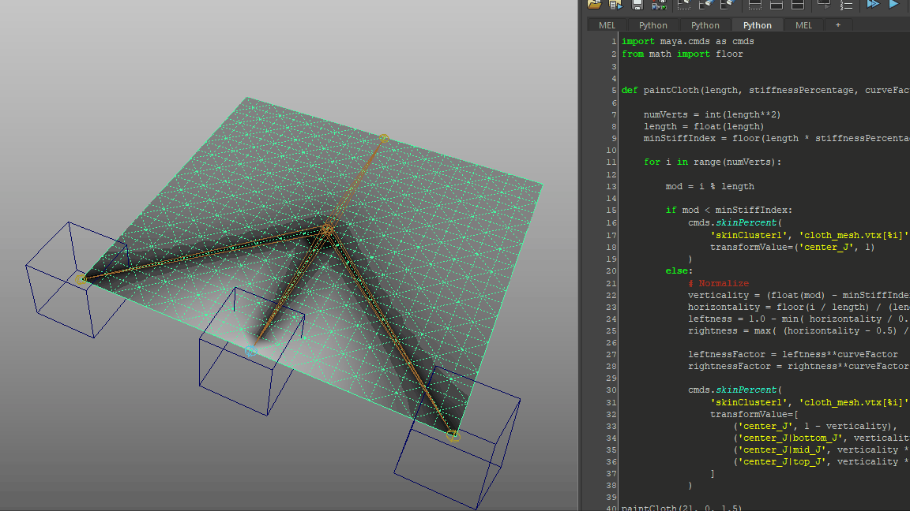
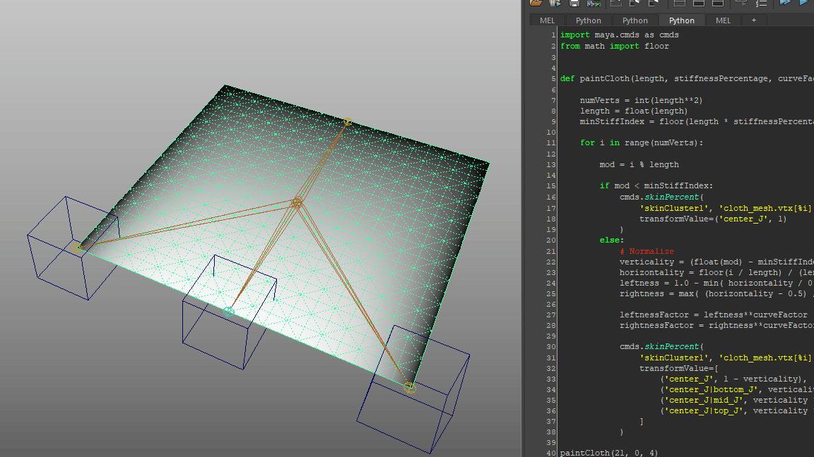

Ginkgo
A 3D first-person atmospheric horror adventure where you use a magic needle to solve puzzles and interact with mysterious spirit creatures.
Unreal Engine 4, Maya
20 members
1 year
As Art Lead, I directed the art pipeline across 10 concept artists, modelers and animators. I handled all technical aspects of character animation, including rigging, Unreal Engine implementation, and character FX simulation.
 Selected as one of four finalists worldwide in the 2020 BAFTA Student Interactive Media Showcase.
Selected as one of four finalists worldwide in the 2020 BAFTA Student Interactive Media Showcase.
Awarded 3rd Place for Best in Gameplay, 2020 Intel University Games Showcase.
Amassed 5,000+ downloads on itch.io.
Sewable Cloth
For our unique cloth-sewing mechanic, I developed a rig-and-simulation-based solution.

Automatic Weight Painting Algorithm
To ensure smooth deformation, I developed an algorithm to skin the cloth mesh with polynomial distribution in a single click.

Adjustable Power Curvature
To rapidly prototype different stretch behaviors, I designed the algorithm to allow user input of different powers for different curvatures: linear, quadratic, cubic, etc.

Adjustable Ledge Distance
Since our fabric rested on ledges in the game, I designed the algorithm to account for variable ledge distances, painting ledge areas as 100% solid and scaling the remaining gradients accordingly.

Unreal NvCloth Simulation
The rigged fabric is also layered with in-engine cloth simulation. I tuned the cloth painting and physics settings to achieve dynamic stretching behavior that was both responsive and stable.
Chase Yokai
I rigged this major antagonist creature based on waka-onna masks, and supervised its development from concept art through animation.

Experimental Anatomical Design
I directed our artists to mess with conventional anatomy, bending the knees back and removing the clavicles for a spider-like silhouette.

IK/FK Blend Controls
For its intense clambering motions, I set up IK/FK blending using my Kinematify autorigger, allowing our animator to switch as needed.

Dynamic Hair Simulation
I skinned its hair cards to multiple bones, simulating them as RigidBodies in Unreal, and tuned the physics to a floaty, ethereal look.

AI-Driven Animation States
I implemented 10 animations in Unreal's AnimGraph for this creature's complex AI behavior, including sound detection and player chasing.
Spider Yokai
I rigged this creature loosely based on various spider-like yokai, and supervised its development from concept art through animation.

Curve-based Eyelid Rig
I rigged the spider's eyelids using my Facify autorigger, allowing our animator to convey a range of expressions with a single eye.

Rounded Silhouette Design
I directed our artists to distinguish this friendly creature's silhouette from the Chase Yokai using round shapes and fuzzy legs.
Lantern Yokai
I rigged this creature based on chōchin-obake, and supervised its development from concept art through animation.

Six-Bone Rig
I designed this rig as an exercise in efficiency, using no more than 6 joints in total while achieving stretchy behavior with the jaws and eyeball.

Dynamic Tassel Simulation
To make lantern interactions engaging, I simulated bones in its tassel as RigidBodies, creating swishy behavior as the player aims their needle.